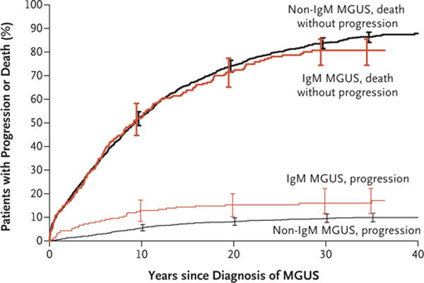
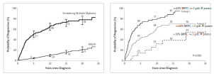
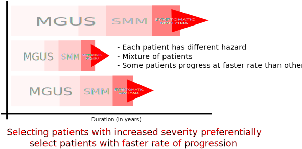
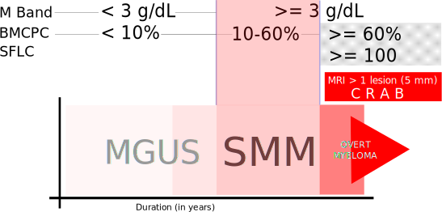
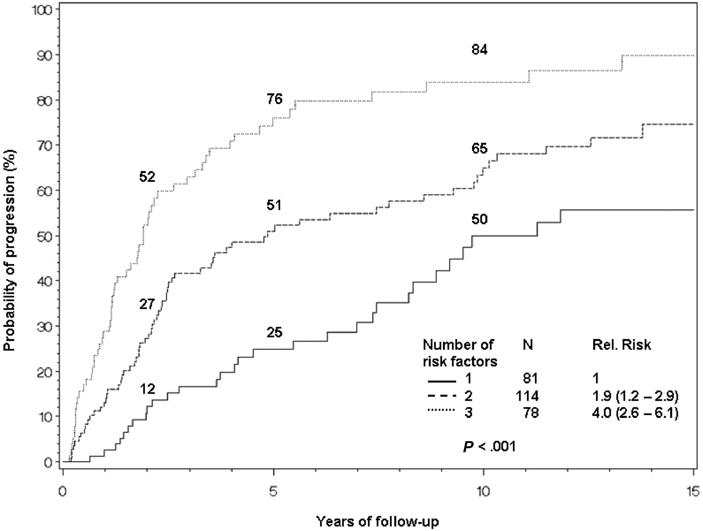

Presentation available at https://sumprain.netlify.com/files/html/smm_hematocon_2019/pres.html or https://bit.ly/36RCnl0
Malignant plasma cell is immortal

NEJM, 2018; https://doi.org/10.1056/NEJMoa1709974

NEJM, 2007; https://doi.org/10.1056/NEJMoa070389

Explanation: https://sumprain.netlify.com/post/evolution_to_myeloma/
Can be any of the heavy Chains, light chains, full or truncated Ig, insoluble form or amyloid form
Usually causes no symptoms
Antibody related complications (neuropathy, RA, glomerulonephritis, hematological)
Deposition related complications (LCDD, Amyloidosis)
Hyperviscosity related complications
Presence of ill effects excludes diagnosis of MGUS/SMM
Symptomatic myeloma is characterised by complications attributed to interaction of malignant plasma cells with bone marrow niche in form of C R A B
Complications can be devastating: AKI \(\rightarrow\) ESRD, vertebral fracture \(\rightarrow\) paraplegia with bladder involvement
Emerging goal of myeloma treatment is to prevent devastating myeloma related complications


Blood, 2008; https://doi.org/10.1182/blood-2007-08-108357
Increased risk of fractures and thromboembolic disease
Deferring chemotherapy is feasible in well informed and well controlled patients
Support use of early treatment in high risk SMM
Various study related issues were raised
SMM \(\rightarrow\) close monitoring for disease progression
If progression to asymptomatic myeloma and/or rapid progression \(\rightarrow\) TREAT AS MYELOMA
Else \(\rightarrow\) OBSERVE and follow point 1
40 - 50 ongoing trials registered at CTRI on various regimens on SMM
Myeloma treatment
Trend towards reduction in treatment related complications (safer drugs, better care and mgt of complications)
PRESENT
SMM \(\rightarrow\) OBSERVE \(\rightarrow\) TREAT IF PROGRESSES
FUTURE
PCD \(\rightarrow\) BASELINE PREDICTION \(\rightarrow\) AGGRESSIVE DISEASE \(\rightarrow\) TREAT WITH SAFER AGENTS TO HALT/CURE
PCD \(\rightarrow\) BASELINE PREDICTION \(\rightarrow\) INDOLENT DISEASE \(\rightarrow\) AVOID TREATMENT